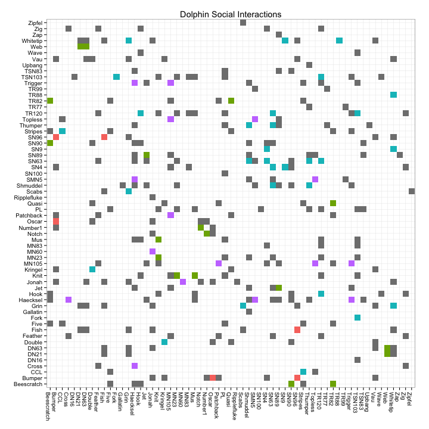
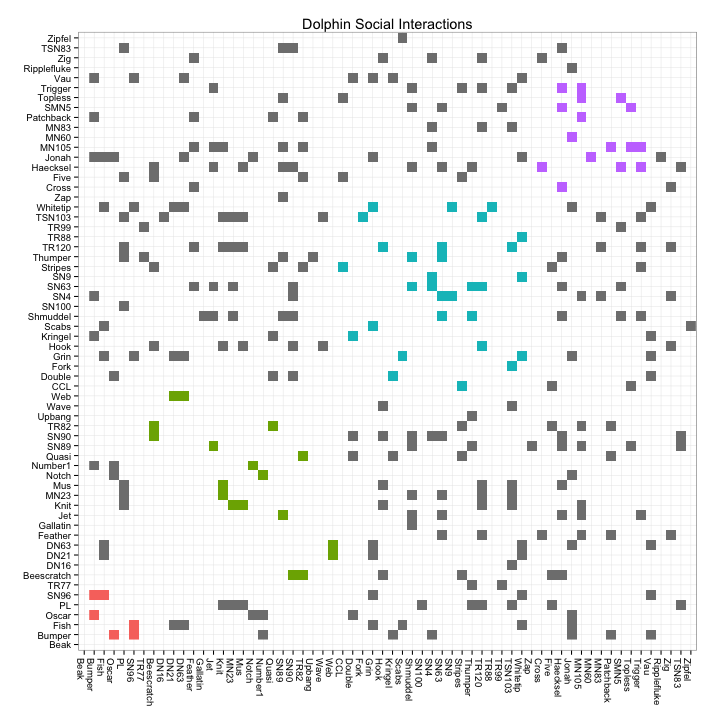

Data Visualisation Assignment 2
1 The Dataset
The data used in this assignment represents social interractions between 62 dolphins 1. We will explore these interactions and investiate whether dolphins form social sub-groups.
2 Dependencies
This investigation will be done using R, and the igraph, dplyr and
ggplot2 packages. The igraph package allows manipulation of graph
data, dplyr allows general data wrangling, and ggplot2 allows us to
produce flexible plots.
install.packages(c('igraph', 'dplyr', 'ggplot2'), repos="http://cran.r-project.org", Ncpus=4)
3 Loading and Generating the Data
Having downloaded the dolphin data in .gml format, the next step was
to load in the data. I also simplified the data, which removed loops
and parallel connections between nodes in order to ensure we have
clean data, and turned it into a directed graph. This made each mutual
interaction represented as two independent directed reactions, making
the adjacency matrix to be created later symmetrical.
I also evaluated the communities within dolphins' social
interractions, using igraph's edge.betweenness algorithm.
library(igraph) dolphins <- read.graph('./dolphins.gml', 'gml') dolphins <- as.directed(simplify(dolphins)) V(dolphins)$comm <- membership(edge.betweenness.community(dolphins)) #V(dolphins)$comm <- membership(optimal.community(dolphins))
4 Wrangling the Data
The following data wrangling is based heavily on the work of Matthew
Lincoln2. The plot_data is formed in order to provide
the data in a format appropriate for ggplot2 to form into an
adjacency matrix.
library(dplyr) node_list <- get.data.frame(dolphins, what="vertices") edge_list <- get.data.frame(dolphins, what="edges") %>% inner_join(node_list %>% select(id, comm, label), by=c("from"="id")) %>% inner_join(node_list %>% select(id, comm, label), by=c("to"="id")) %>% mutate(group=ifelse(comm.x == comm.y, comm.x, NA) %>% factor()) # Create a character vector containing every node label all_nodes <- sort(node_list$id) # Adjust the 'to' and 'from' factor levels so they are equal # to this complete list of node ids plot_data <- edge_list %>% mutate( to = factor(to, levels = all_nodes), from = factor(from, levels = all_nodes))
5 Generating the Adjacency Matrix
An adjacency matrix was selected as it provides a neat and convenient
method for anaylysing graph interactions. In this plot, both the x and
y axes reprisent individual nodes, in this case dolphins. Points
represent an interaction between two dolphins. Grey points represent
interactions between dolphins of different communities, whereas
coloured dots represent interactions within the various, arbitrary
communities discovered by igraph's edge.betweenness.
library(ggplot2) # Create the adjacency matrix plot ggplot(plot_data, aes(x = label.x, y = label.y, fill = group)) + geom_raster() + theme_bw() + # Because we need the x and y axis to display every node, # not just the nodes that have connections to each other, # make sure that ggplot does not drop unused factor levels scale_x_discrete(drop = FALSE) + scale_y_discrete(drop = FALSE) + theme( axis.title.x=element_blank(), axis.title.y=element_blank(), axis.text.x = element_text(angle = 270, hjust = 0), # Force the plot into a square aspect ratio aspect.ratio = 1, # Hide the legend (optional) legend.position = "none")

6 Ordering Nodes by Community
The plot above is technically correct, however does not reveal much to the observer. By arranging the nodes by community first, rather than by name, communities become easier to distinguish. Doing so effectively assigns community to the distance metric on the plot.
# Create a character vector of node names sorted by their # community membership. Here, I rearrange the node_list # table by the "comm" variable, then extract the # "name" vector name_order <- (node_list %>% arrange(comm))$label # Reorder edge_list "from" and "to" factor levels based on # this new name_order plot_data <- edge_list %>% mutate( label.x = factor(label.x, levels = name_order), label.y = factor(label.y, levels = name_order))

7 Observations
We now have an effective method to quickly analyse interactions within and between communities. The Adjacency matrix here maps both distance and hue to node community. The interactions between and within communities are visualised using density.
It is obvious from the plot that there is no particular increase in interactivity within the communities. Therefore, this data would seem to indicate that dolphins tend not to form communities, and rather tend to interact indiscriminantly accross the wider group.
Footnotes:
D. Lusseau, K. Schneider, O. J. Boisseau, P. Haase, E. Slooten, and S. M. Dawson, "The bottlenose dolphin community of Doubtful Sound features a large proportion of long-lasting associations" Behavioral Ecology and Sociobiology 54, 396-405 (2003). Available: https://networkdata.ics.uci.edu/data.php?id=6
Lincoln, Matthew D. "Adjacency matrix plots with R and ggplot2." Matthew Lincoln (blog), 20 Dec 2014, http://matthewlincoln.net/2014/12/20/adjacency-matrix-plots-with-r-and-ggplot2.html.